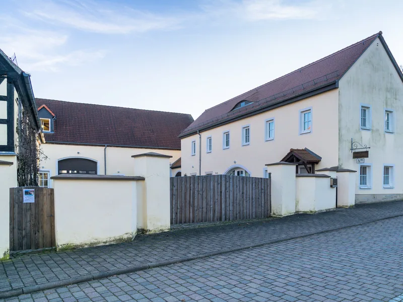
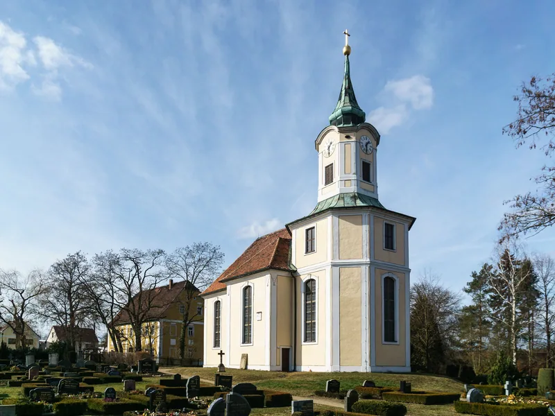
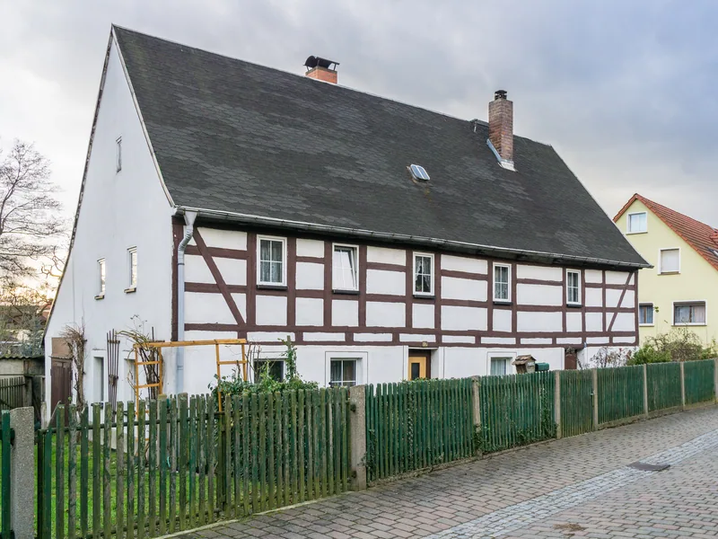
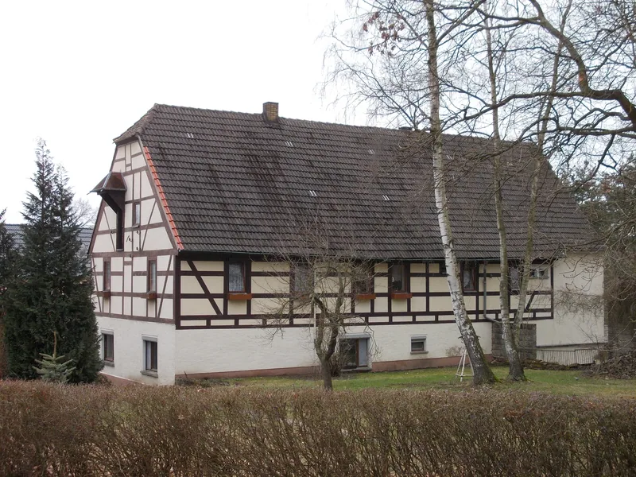
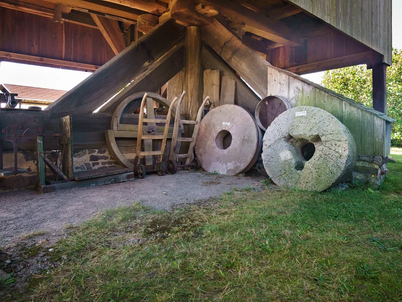
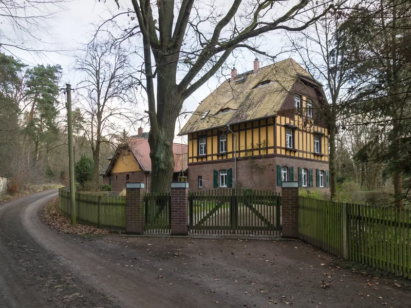
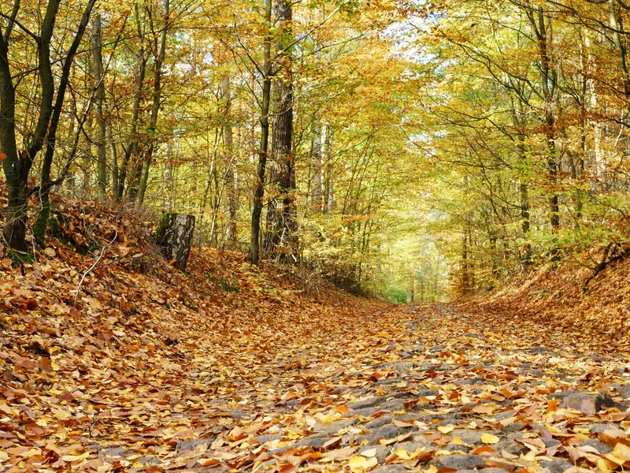
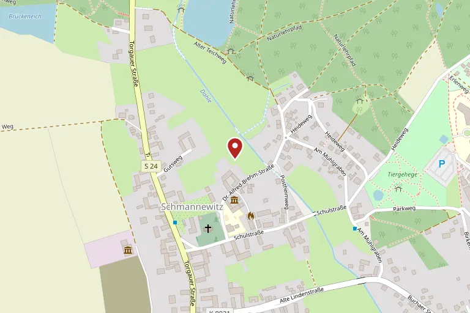

Bäuerliches Museum Schmannewitz
Über dreitausend Dinge aus dem Alltag der Heidebauern — bewahrt in einem Dreiseithof von 1830, samt funktionstüchtiger Schauschmiede.
Ein Hof, der selbst zum Exponat wurde
Das Wohnstallhaus mit Backhaus stammt aus dem Jahr 1830. Zusammen mit dem Kopfsteinpflaster des Hofes und der Toreinfahrt steht der Dreiseithof heute als Kulturdenkmal unter Schutz — als, wie es in der sächsischen Denkmalliste heißt, „anschauliches Beispiel des bäuerlichen Lebens und Bauens in Schmannewitz zur Zeit seiner Erbauung".
Zwei Geschosse, Krüppelwalmdach, Fledermausgauben mit Schiebefenstern, zur Straße gelber Putz und weiße Fenstergewände, an Giebel und Rückseite Sichtfachwerk. Wer über das Pflaster in den Hof tritt, steht nicht vor einer Kulisse, sondern in dem Gebäude, von dem die Ausstellung erzählt.
Getragen wird das Museum vom Verschönerungsverein 1882 Schmannewitz e. V. — ehrenamtlich, Wochenende für Wochenende.

Über dreitausend Dinge
Der Rundgang führt durch die gute Stube, die Küche mit Kachelofen und Backofen, die Schlafstube mit historischem Kinderbett, Kupferwärmflaschen und Kinderwagen, weiter ins Waschhaus und bis unters Dach. Besonderes Augenmerk verdienen der Kachelofen, eine Wäscherolle aus dem 19. Jahrhundert und die Butterfässer.
In der ehemaligen Scheune stehen die großen Geräte: Leiterwagen, Feldwagen, Dreschmaschinen. Im gegenüberliegenden Auszugshaus warten wechselnde Sonderausstellungen — etwa zu „Omas Schulzeit" oder zur Ortsgeschichte —, ein eingerichteter Klassenraum, ein Weihnachtszimmer und ein Vortragsraum.
Abgerundet wird der Gang durch den Hof von einer funktionstüchtigen Schauschmiede. Zu den Festen im Jahr wird sie angeheizt: Dann wird geschmiedet, gedroschen, gebuttert, gesponnen, Korb geflochten und Brot im Hausbackofen gebacken.

Schmannewitz und die Dahlener Heide
Der Hof steht mitten im Ort, zwischen Kirche, Fachwerkhäusern und Windmühle — und ringsum beginnt die Heide. Die folgenden Bilder zeigen das Museumsgebäude von außen sowie sein Umfeld.
-

Seitenflügel des Hofes -

Die Dorfkirche, wenige Schritte vom Hof -

Fachwerk an der Alten Lindenstraße -

Wohnhaus am Mühlgraben, um 1800 -

Fachwerkhaus in Schmannewitz -

Mühlsteine unter der Schmannewitzer Windmühle -

Das Forsthaus am Rand der Heide -

Herbst in der Dahlener Heide
Öffnungszeiten
| Ostern bis 1. Advent | Sonnabend und Sonntag 14 bis 16 Uhr |
|---|---|
| Gruppen ab 10 Personen | ganzjährig nach Vereinbarung |
Stand: August 2026. Bitte vor dem Besuch beim Haus bestätigen lassen.
Gut zu wissen
- Die Besichtigung führt bis unters Dach und lohnt sich besonders für Familien mit Kindern und für Schulklassen.
- Termine für Gruppen ab zehn Personen vereinbaren Sie telefonisch unter (034361) 51683.
- Der Hof ist mit Kopfsteinpflaster belegt; festes Schuhwerk ist zu empfehlen.
Veranstaltungen 2026
| 3. Oktober 2026 | Erntefest, ab 13.30 Uhr |
|---|---|
| 29. November 2026 | Sonderausstellung zum 1. Advent |
| 24. Dezember 2026 | Der Weihnachtsmann auf Durchreise |
Stand: August 2026. Bitte vor dem Besuch beim Haus bestätigen lassen.
Zum Erntefest
- Traditionelle handwerkliche Vorführungen im Dreiseithof: Dreschen, Schmieden, Buttern, Korbflechten, Spinnen.
- Zuckerkuchen aus dem Hausbackofen, Kaffee, Butter- und Wurstbrote.
- Es spielen die Original Jahnataler Blasmusikanten.
- Die Saison beginnt jedes Jahr am Ostersonntag; im Frühjahr folgen Flohmarkt und Frühlingsfest.
Anfahrt
Anschrift
Dr.-Alfred-Brehm-Straße 2
04774 Dahlen OT Schmannewitz
Mit dem Auto
Schmannewitz liegt an der S24 zwischen Dahlen im Süden und Torgau im Norden. Fahren Sie bis zur Ortsmitte: An der S24 liegt ein kleiner Platz mit Pfarrhaus und Kirche. Dort biegen Sie in die Schulstraße ein, nach etwa 200 Metern unmittelbar am Kindergarten links in die Dr.-Alfred-Brehm-Straße — nach weiteren 200 Metern erreichen Sie das Museum.
Zu Fuß und mit dem Rad
Der Ort liegt am Rand der Dahlener Heide und ist über deren Wander- und Radwege zu erreichen.

Kontakt
Fragen zum Besuch, zu Gruppenterminen oder zur Barrierefreiheit beantwortet der Verschönerungsverein 1882 Schmannewitz e. V.
- Träger
- Verschönerungsverein 1882 Schmannewitz e. V.
- Telefon
- +49 34361 51683
- pension.dietze@t-online.de
Anschrift
Bäuerliches Museum Schmannewitz
Dr.-Alfred-Brehm-Straße 2
04774 Dahlen OT Schmannewitz